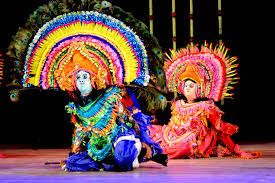

Welcome To Incredible India
Discover the diversity, beauty, and rich heritage of India!
About India
India is land of incredible diversity. From the snow-capped peaksof the Himalayas to the serene backwaters of Kerala. Every corner of India tells a unique story. India is the second-most populous country in the world and boasts a history spanning thousands of years. Its rich traditions have left an indelible mark on the world.
India: A land of cultur and geographical diversity
"Unity in diversity is not just a slogan in India but a way of life."
Highlights of India include:
- Architecture: Majestic monuments like the Taj Mahal and Red Fort.
- Cuisine: Diverse flavors from spicy curries to sweet desserts.
- Cultur: Vibrant festivals, classical dances, and colorful attire.
Famous Landmark
India is home to 29 UNESCO World Heritage Sites, making it a paradise for history and architecture enthusiasts.
| 1. |
The Taj Mahal, a symbol of eternal love. |
|

|
| 2. |
The Qutub Minar, an architectural marvel in Delhi. |
|

|
Don't miss exploring the intricate carving, towering minarets, and breathtaking landscapes!
Indian Cultur
India's cultur heritage is a blend of various traditions, languages, and religions. Each region has its unique identity and traditions that are celebrated through festivals and daily life. Here are some highlights:
- Classical Dances: Bharatanatyam, Kathak, and Odissi.
- Music: Traditional instruments like the sitar, tabla, and veena.
- Festivals: Diwali, Holi, Eid, and Christmas bring people together in celebration.
| 1. |
A glimpse of Indian Classical Dances. |
|

|
Delicious Indian Cuisine
Indian food ais as diverse as its cultur. From the fiery curries of the south to the hearty bread of the north, there's something for everyone. Popular dishes inclue:
- North Indian: Butter chicken, naan, and paneer tikka.
- South Indian: Dosa, idli, and sambhar.
- Street Food: Pani puri, chaat, and vada pav.
| 1. |
Delicious Hyderabadi Biryani. |
|

|
| 2. |
Colorful and flavorful Indian street food. |
|

|
Contact us at info@incredibleindia
© 2025 Incredible India Project. All right reserved.
Follow us on:
Facebook |
Twitter